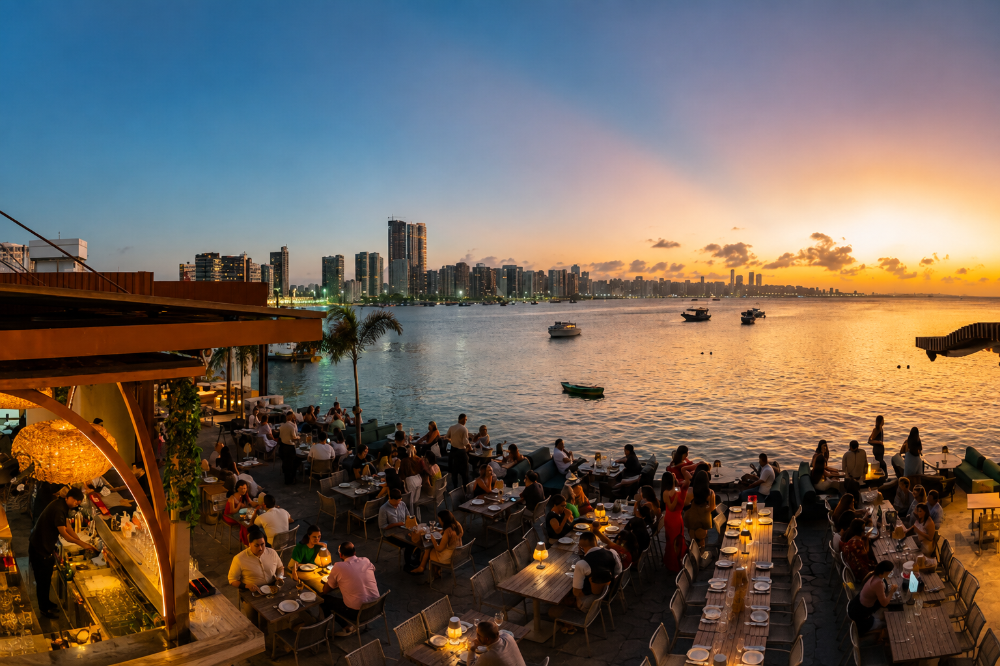
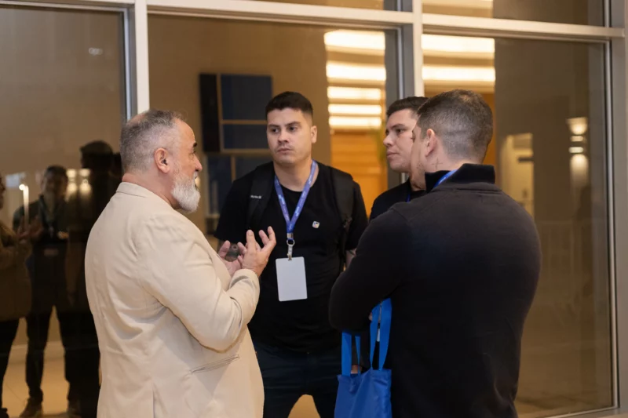
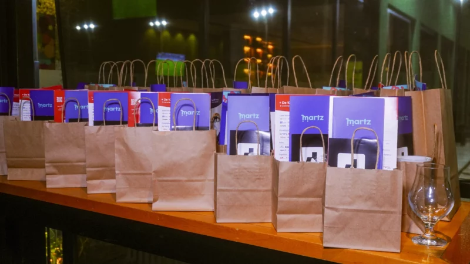
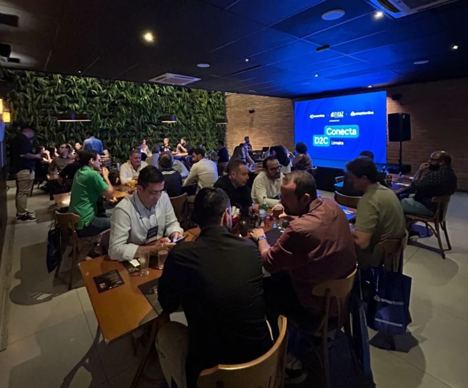
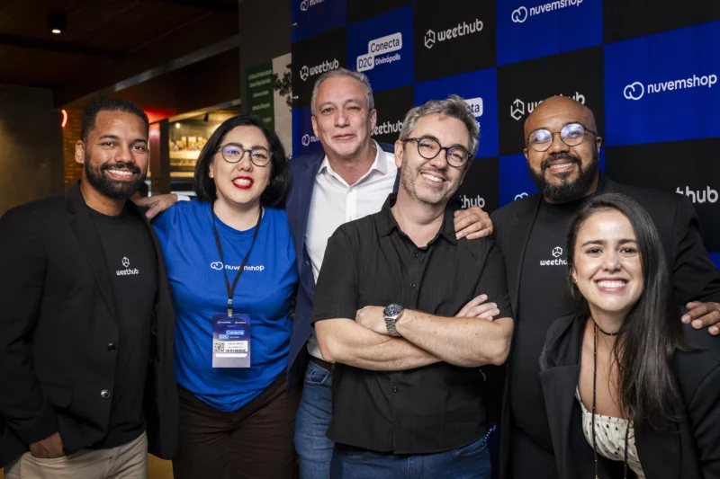
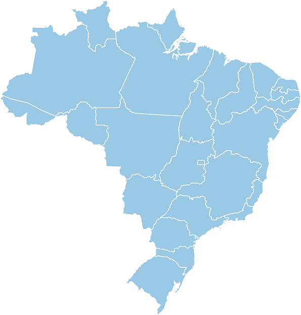

NOVAS CIDADES
Encontre a próxima edição do Conecta D2C em diferentes cidades do Brasil.
Encontros presenciais da Nuvemshop com parceiros locais para trocar experiências com quem vive o comércio digital.

AGENDA
Próximas edições
Confira as cidades e datas confirmadas e veja como participar de cada encontro.
COMO FUNCIONA
Cada cidade dá forma a uma edição única
Com parceiros que conhecem o mercado local, cada encontro transforma desafios reais em temas relevantes, experiências próximas e conexões com potencial de negócio.
Algumas das mais de 100 mil lojas que vendem com a gente
EDIÇÕES ANTERIORES
Toda edição deixa um
novo ponto no mapa.
Encontros que reuniram marcas, parceiros e especialistas em diferentes cidades.

Rio de Janeiro / RJ
Parceiro · tema · ano

Franca / SP
Parceiro · tema · ano

Limeira / SP
Parceiro · tema · ano

Divinópolis / MG
Parceiro · tema · ano
SUA CIDADE AINDA NÃO ESTÁ NA AGENDA?
Receba avisos sobre os próximos eventos na sua região.
Este cadastro não representa inscrição em evento.

AGÊNCIAS PARCEIRAS
Eventos realizados com quem conhece cada mercado de perto.
As agências parceiras da Nuvemshop ajudam a definir os temas e reunir, em cada cidade, quem pode contribuir para a conversa.
Confira a agenda- Agência 01
- Agência 02
- Agência 03
- Agência 04
- Agência 05
- Agência 06
- Agência 07
- Agência 08
- Agência 09
- Agência 10
- Agência 11
- Agência 12
- Agência 13
- Agência 14
- Agência 15
- Agência 16